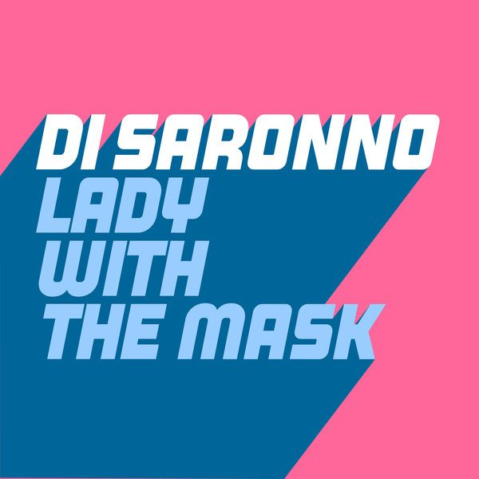

I 24 dischi
 1
Everybody JumpingNari, T&C
1
Everybody JumpingNari, T&C
 2
GirlKC Lights
2
GirlKC Lights
 3
The WhispererGabry Venus, Paul Jockey
3
The WhispererGabry Venus, Paul Jockey
 4
Get BusyATFC
4
Get BusyATFC
 5
Get FreakyTodd Terry, TCTS
5
Get FreakyTodd Terry, TCTS
 6
All This LoveJunior Sanchez
6
All This LoveJunior Sanchez

7 Lady With The MaskDi Saronno 8
Magic UnderwearTanera
8
Magic UnderwearTanera
 9
Keep DancinCloverdale & Krude
9
Keep DancinCloverdale & Krude
 10
Walk with youAutograft ft Janelle Kroll
10
Walk with youAutograft ft Janelle Kroll
 11
Found Love (David Penn Remix)Double Dee, Dany, David Penn
11
Found Love (David Penn Remix)Double Dee, Dany, David Penn
 12
U&IDropgun & Christopher Damas
12
U&IDropgun & Christopher Damas
 13
DaylightMalarkey x Mick Mazoo
13
DaylightMalarkey x Mick Mazoo
 14
Tell Me ft. Jack LightColourveins, Evernone
14
Tell Me ft. Jack LightColourveins, Evernone
 15
Got To Keep OnPromise Land
16
Wish You Where HereAfrojack & DLMT
15
Got To Keep OnPromise Land
16
Wish You Where HereAfrojack & DLMT
 17
Party On My OwnAlok & Vintage Culture
17
Party On My OwnAlok & Vintage Culture
 18
Forever LoveBingo Players & Disco Fries
18
Forever LoveBingo Players & Disco Fries
 19
HappinesTomcraft, MOGUAI, ILIRA
20
Piccola stella senza Hypnotized- Manuel Rizzo MashupPurple Disco Machine VS Ligabue
19
HappinesTomcraft, MOGUAI, ILIRA
20
Piccola stella senza Hypnotized- Manuel Rizzo MashupPurple Disco Machine VS Ligabue
 21
Loca Loca (Original Mix)CASSIMM
22
Have To Have (The Cube Guys Remix)Nicola Zucchi, Anderblast
21
Loca Loca (Original Mix)CASSIMM
22
Have To Have (The Cube Guys Remix)Nicola Zucchi, Anderblast
 23
OkayAlaia & Gallo
23
OkayAlaia & Gallo
 24
Anytime (Clubmix)DAN ROS
24
Anytime (Clubmix)DAN ROS
La tracklist
- 1 Everybody Jumping Nari, T&C PornoStar Records
- 2 Girl KC Lights Toolroom Records
- 3 The Whisperer Gabry Venus, Paul Jockey Under Town Ground
- 4 Get Busy ATFC Blockhead Recordings
- 5 Get Freaky Todd Terry, TCTS Toolroom Records
- 6 All This Love Junior Sanchez Glasgow Underground
- 7 Lady With The Mask Di Saronno Glasgow Underground
- 8 Magic Underwear Tanera Glasgow Underground
- 9 Keep Dancin Cloverdale & Krude Night Service Only
- 10 Walk with you Autograft ft Janelle Kroll Armada Music
- 11 Found Love (David Penn Remix) Double Dee, Dany, David Penn Irma Dancefloor
- 12 U&I Dropgun & Christopher Damas Hexagon
- 13 Daylight Malarkey x Mick Mazoo Hexagon
- 14 Tell Me ft. Jack Light Colourveins, Evernone PROPHECY Recordings
- 15 Got To Keep On Promise Land Musical Freedom
- 16 Wish You Where Here Afrojack & DLMT Wall Recordings
- 17 Party On My Own Alok & Vintage Culture CONTROVERSIA
- 18 Forever Love Bingo Players & Disco Fries Hysteria Records
- 19 Happines Tomcraft, MOGUAI, ILIRA Spinnin' Records
- 20 Piccola stella senza Hypnotized- Manuel Rizzo Mashup Purple Disco Machine VS Ligabue DemoDrop
- 21 Loca Loca (Original Mix) CASSIMM NONSTOP
- 22 Have To Have (The Cube Guys Remix) Nicola Zucchi, Anderblast Cube Recordings
- 23 Okay Alaia & Gallo HOUSETRIBE RECORDINGS
- 24 Anytime (Clubmix) DAN ROS Turtle Wax Recordings